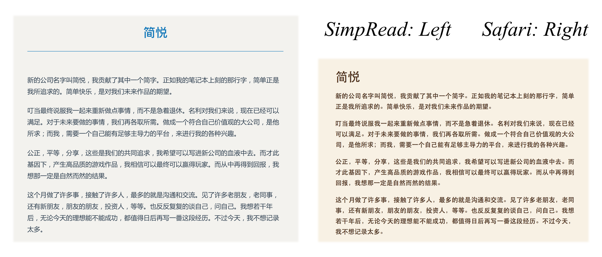
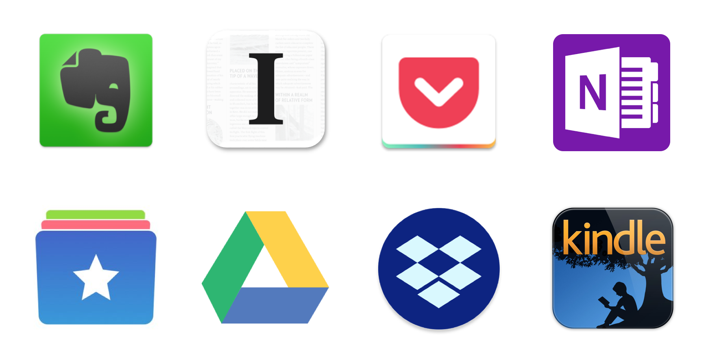
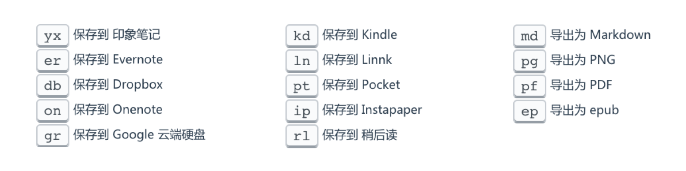
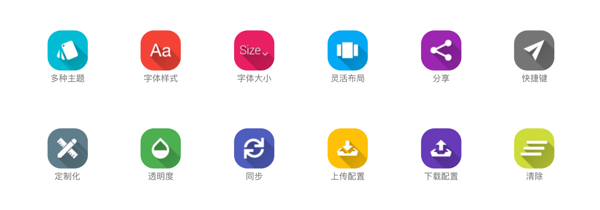
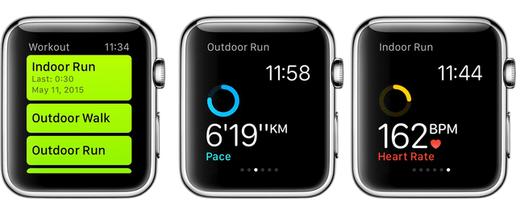
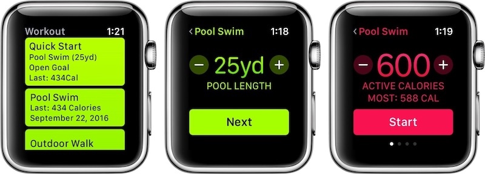
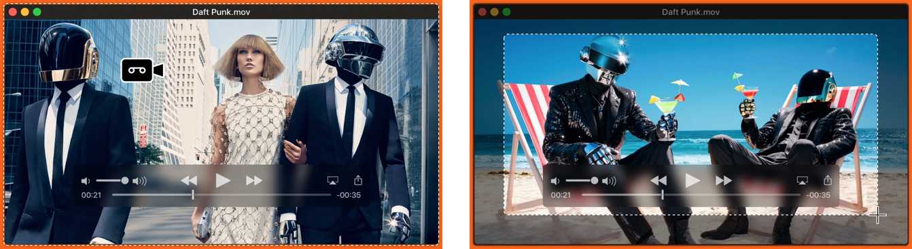
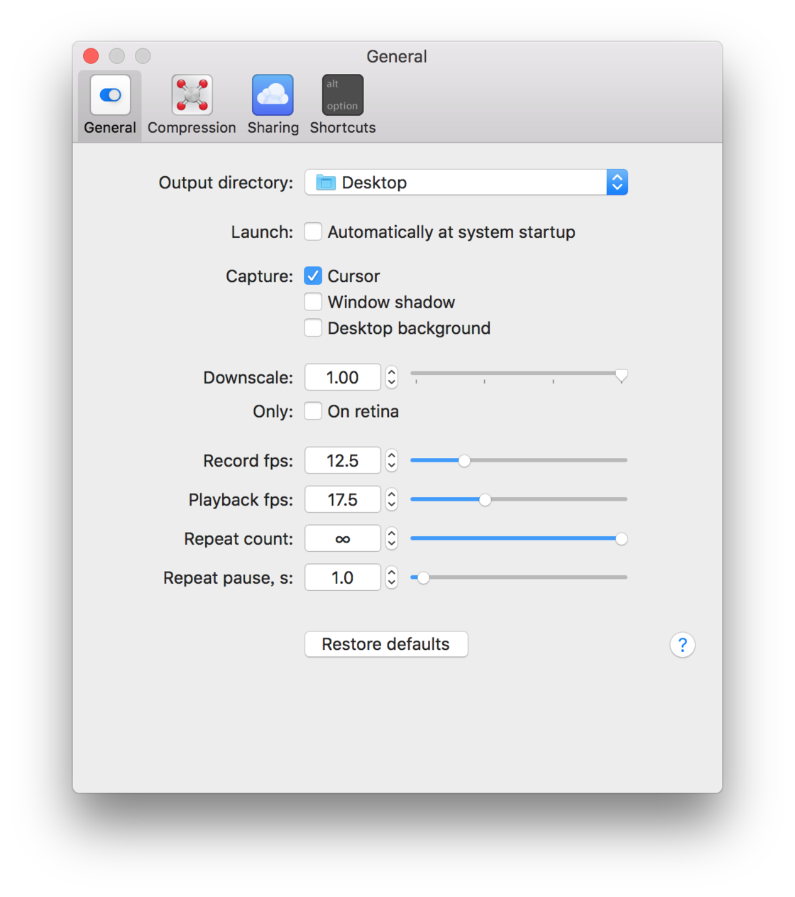
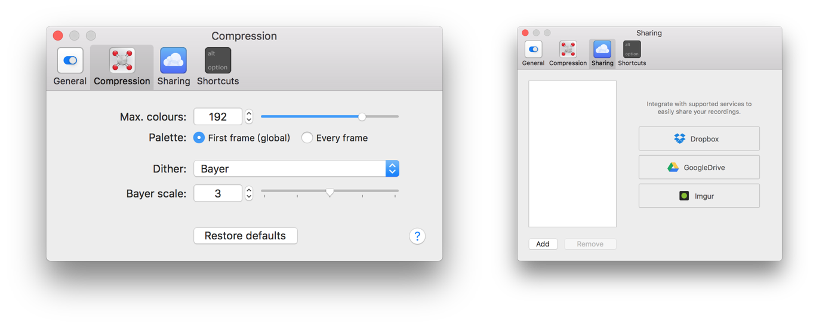

SimpRead：简悦你的知识消化历程
本文被少数派精选：点此查看
在互联网上如少数派这样排版良好的网站不少，但排版欠佳的也不少，类似 Safari 阅读模式的功能就比较重要了。而且无论排版好差，我们晚间也许更偏爱暗色背景。遇到好文，也许还想保存或备份到 Pocket、OneNote、印象笔记以温习或整理。
目前，在 Chrome Web Store 中可以检索到的阅读模式扩展程序仅有个位数，如 Just Read、Read Mode、阅读模式等，SimpRead（简悦）是其中集大成者，达成「简单阅读，愉悦心情」之目的。
源于 Safari 但更胜之的阅读模式
相较于 Safari 只能调节字体大小、类型、背景颜色和自动进入阅读模式的功能，SimpRead 还可以调整版面布局、生成目录大纲、显示阅读进度，甚至可以 DIY 样式。除了阅读模式，SimpRead 还提供稍后读、聚焦模式，可谓将阅读网页这件事情做向了极致。

连接生产力工具
万物互联会产生更大的生产力，SimpRead 可以连接 OneNote、印象笔记、Pocket、Google Drive、Dropbox、Kindle 等工具，你可以一键将任意文章保存至这些工具中，然后阅读、加工，乃至消化。除此之外，SimpRead 还可以将文章转为 MD、PDF、PNG、EPUB 格式文件，或分享至微博、Twitter、Telegram 等社交工具。

快捷键
SimpRead 支持 快捷键 操作，按 s r 键开启或关闭快捷键模式，当此模式开启时，按 , 键可以一览所有快捷键，比如按 o n 键即保存到 OneNote，按 g r 键即保存到 Google Drive，按 m d 键即导出为 MD 文件。借助快捷键简化流程，可轻松愉悦地将文章保存至各种工具或转为各种格式等待消化。
⚠️ 只有在英文输入状态下，按 , 键才会显示所有快捷键，其他快捷键中英文输入状态皆可。

更多功能等你发现
SimpRead 不仅仅是提供类 Safari 阅读模式的工具，其诸多功能可以完成的事情众多。比如我还用来备份文章：五年前我搭了博客，但又遗弃了，本地备份也误删了，导致数十篇博客就此消失。重新开设博客并在少数派投稿时，我就在盘算怎么备份文章… 而 SimpRead 可将文章以 MD 文件形式保存在 Google Drive 等云盘，解决了我的需求。可在 官方维基 详细查看各类功能。

总而言之，SimpRead（简悦）青出于蓝而胜于蓝，既在阅读模式上做到了极致，又连接众多生产力工具提高了知识消化率，还可以完成更多的事情，却不显得臃肿。可以说，在这个小领域里，SimpRead 是无可挑剔的五星级工具。
本文应用版本：
SimpRead 1.1.0
Apple Watch 堪为最佳的伴侣
本文被少数派精选：点此查看
如果使用 Apple 设备，Apple Watch 堪为最佳伴侣，但也并非必需品，单身贵族一样可以过得好…… 但有个伴侣可能更好。
初入 Apple Watch 时，我以为它会成为我的效率工具，这也是劝服自己花钱的最主要理由。为此我特意下载了 OmniFocus 以示决心，不出两周我渐渐明白其实所谓效率工具的确只是我花钱的理由，而非内心对它真实的定位：一个好伙伴，可以帮我做一些事，让我能更懒。

运动，Apple Watch 主要宣传的功能之一，也的确予人欣悦。开通一号多端业务后，AW 3 就成了 iPhone 分身，无需再携带手机，只需手腕处的 AW 跑步、游泳就不会再漏掉电话，也能以更舒适的方式监测运动，搭配 AirPods 听着音乐也成了更赏心悦目的美事。单独的 Apple Watch 像是龙游浅水，接打电话、听音乐均外放的话，不仅太傻乎，也可能太耗电。对于 Apple 设备，AirPods 无愧于最具明天属性的无线蓝牙耳机，与 Apple Watch 搭配更是天作之合。


运动是主要的生活方式，一般每天一次，但并不是我最频繁的行动：
① 在繁忙时候我常需要在特定时间起床，现在终于有了 Apple Watch 默默叫醒我，而不必影响到室友，还可以设定睡眠监测。设定闹钟提醒其他事项的体验也怡人；
② 之前借助 iPhone 三方应用解锁 Mac 的体验并不好，而 AW 可以无缝实现；
③ 番茄工作法可以随时进行、打断或停止，远比手机、电脑来得方便；
④ 听音乐、聊微信、打电话等，连接着 AirPods 体验更美好。
简而言之，简单的任务 Apple Watch 都可以完成，体验比手机更美好，频繁看手机的习惯也变成了看手表。然而，它并非不可或缺的伴侣，钱花在不可或缺的事物上会更好，但在可或缺的事物中，Apple Watch 可能最不可或缺。
墙内开花墙外香，也许是最优秀的全能型 PDF 应用
本文被少数派精选：点此查看
谈到 macOS 上的 PDF 应用，大概都会想起预览、Skim 及其衍生品、Adobe Acrobat，以及声名远扬的 PDF Expert，但你也许不曾注意到一款墙内开花墙外香的全能型 PDF 应用：PDFelement，由 万兴科技（Wondershare）出品。在 万兴科技中国官网 可以查看全世界用户的热力图。
不夸张地讲，PDFelement 不逊色于任何我们所想起的 PDF 应用，它功能全面但每一项又如此专业，堪称匠心独具的工具和艺术品。最初 Wondershare 家的 PDF 相关作品是各自独立的，15 年才将所有功能融合并推出 All-in-One 应用 PDFelement 5，于 17 年 4 月推出新应用，也即让我心血来潮写测评的 PDFelement 6，这是一款令我无限接近满意的作品。
PDFelement 6
Pro= 综合性 PDF 工具套装 = PDF 阅读器 + PDF 注释器 + PDF 编辑器 + PDF 转换器 + PDF 创建器 + 表单填写和创建 +OCR 字符识别+数据提取+批量处理+ 更多……

对我而言 iPad Pro 距完全替代电脑仅有一步
本文被少数派精选：点此查看
我在 6.13 收到 10.5 寸 iPad Pro，本来的目的是为了批注论文，然后实际上却替代了许多电脑上完成的任务，且以我自身的需求为行文结构听我慢慢道来。
外设的选择
买 Pro 不买笔，不如回家削铅笔。不得不说 Apple Pencil 是 iPad Pro 的必需品，否则不如购买 iPad 其他系列。我同时淘宝了一个专用笔袋来放置 Apple Pencil 及转接头、擦拭布、取卡针。关于键盘，我想了很久。最优先考虑的是 Slim Combo 键盘 & 保护壳，为此我多次催促 Apple 客服，但最后却没有购买。原因有二：Slim Combo 是可拆卸式键盘，无法合盖以覆盖屏幕，也就不能随意将 iPad 放入书包；虚拟键盘才是最常用的，因为许多应用对虚拟键盘做了优化，有许多实用的快捷按钮，而实体键盘可能只需要在大量打字的时候使用。故我认为如果不得不使用键盘，最佳的组合是 Apple 官方皮革款保护套与罗技 K480 或 K380 等蓝牙键盘。
本章小结：我认为并不需要保护套有一个放 Apple Pencil 的位置，虽然最初我是被 Slim Combo 这点所吸引。总之，上述的外设是我经过深思熟虑后最能接受的组合，平时我也会尽量尝试虚拟键盘或语音输入。
文献的管理与批注
如果只用 iPad Pro 管理与批注文献，Papers for iOS 是最佳的选择，颜值与功能堪称最佳。Papers 与其他文献管理工具一样（如 Zotero）可以借助书签从 Safari 上收集文献，并且可以在 Word 等应用中插入神奇引用代码，这意味着你完全可以在 Word for iOS 上写论文，但还有不得不做的一步：在电脑上格式化神奇引用代码。如果在 iPad 上可以做到「格式化」这点，那就真得完全可以脱离电脑了。
专业的高颜值 GIF 录制应用：Gifox
本文被少数派精选：点此查看
无论是开源的 Kap 还是 Mac App Store 中的 GIF Brewery、GIPHY Capture 等，这些 GIF 录制应用我都用过，其共同点是免费，这也是我很久之前选择应用的倾向。后不满于这类应用的体验，在 Mac App Store 和搜索引擎以 GIF 为关键字检索：
- GIPHY 等免费 GIF 录制应用较为醒目；
- 有一些优秀的应用是录制视频，后将视频转为 GIF，或是直接将图片、视频转为 GIF；
- 借助多个应用，如 QuickTime、ffmpeg、gifsicle 三者，也是将视频转为 GIF。
GIPHY 等免费且知名的应用的缺陷是没有窗口录制模式；视频、图片转 GIF 类应用又增加了步骤，而且通常这类应用也不是专为 GIF 设计，故难免臃肿；借助多个应用无疑更增加了工作量。
我同时也发现了 Gifox，当时在 Mac App Store 没有一则评论，检索也很难发现有人推荐。但，大概它是目前唯一一款专为 GIF 录制所设计并支持窗口录屏的应用，专注、轻量、优美、快速。
GIF 窗口录制模式

这也是我给予它最强 GIF 录制工具评价的主要原因之一，GIPHY Capture、Kap、GIF Brewery 等 GIF 录制应用都没有这个功能，它们都只有区域录制功能，这也许是 GIF 界的独苗。而窗口录制模式的体验实在美好。当然，确实也可以选择支持窗口录屏的应用，然后输出为 GIF，它的劣势我前面也讲过。
GIF 录制控制
- 设置输出目录，一般桌面是最方便的选择；
- 设置图像捕捉方式：勾选 Cursor 表示录制光标，勾选 Windows shadow 表示也录制类似截屏的阴影，勾选 Desktop backgroud 表示录制桌面背景；
- 控制压缩比例：亲测设为 0.5 时体积减小了三分之二；
- 控制「录制和播放」的每秒显示帧数（FPS），低帧数可以减少 GIF 体积，但也会影响播放流畅度；
- 设置播放循环次数及播放间隔。

压缩功能
Gifox 的默认压缩算法总是选择近期最好的两种，老式算法只作为备选方案，我们可以设置具体的选项：
- 减小
Max. colours以缩减 GIF 文件体积，但也会因为色彩过少使照片的观感降低； - 指定
Palettle即调色板，First frame指以第一帧为基础生成调色板，好处是可以减小 GIF 体积； - 上一步指定了调色板，需要借助 Dither（抖动）使调色板色彩尽量达到原色彩的程度，GIF 最大只能设置为 256 色调色板，所以需要使用 Dither 以模拟出更多的色彩。形象地讲：比如色彩限定在 100 种，但实际录制的画面包含 1000 种色彩，Dither 可以使 100 种色彩更好地表现出 1000 种色彩的效果，使人难以察觉其中的差别；
- 设置 Dither 算法：规则抖动算法 Bayer 抖动因其简单有效而较常用，
Bayer scale是 Bayer 抖动的参数，数值越高 GIF 质量越好。误差分散算法 Floyd-Steinberg 抖动虽然可以产生更好的图像效果，但资源占据较多。若要了解其他算法还请参阅文献。

Gifox 支持一键分享功能，可以绑定自己的 Dropbox、Google Drive 等账号，不像 GIF Brewery 等需要注册它们的账号，而且官网表明新版本会支持 Slack、Box、GIPHY。当然，它也支持设置快捷键以快速录制和停止。如果对 Gifox 仍有疑问，点击界面右下角的 ? 可以看到对功能的详细解释。
但 Gifox 也有不足，无法对录制的 GIF 进行编辑，这只适合一次录制即成品，但也难免出差错，还好可使用预览，来删除无用帧或者添加字幕。关于这点我也会向开发者反馈。
你可以在 Mac App Store 下载 Gifox（30 元），我之前评测过 PDF 应用，曾感慨全五星应用实在难得，但在 GIF 领域 Gifox 就是一款颜值与功能都无可挑剔的应用，如果未来增加编辑功能，那它就无愧于 GIF 领域的全五星应用。
本文应用版本：
Gifox 1.4.0
Copyright © 2018 唐小筑 CC BY-NC-SA 4.0